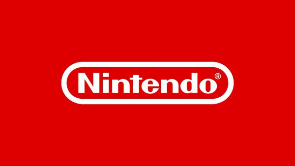
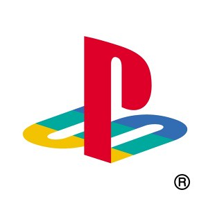
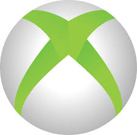

Si te planteas meterte en el mundo del gaming, lo mas probable es que no sepas por donde empezar,
debido
a
que
hay multiples plataformas
en las que puedes empezar en este mundo. La plataforma en la que
te
inicies va
a
depender
de multiples aspectos, ya sea desde el dinero que
estes dispuesto a gastarte en una consola,
cuanto
tiempo
tienes para
jugar, si pasa mucho tiempo fuera de casa, la preferencia de los juegos etc.
Desde aqui
quiero
resolver
tus
dudas
acerca de todo, asi que he elaborado unas tablas para que sepas por donde tirar, en la que se
incluyen
la
descripcion
de cada plataforma y una comparativa entre unas y otras.
Te dejamos una tabla en la que puedes enfocar en que tipo de plataforma encajas mas.
| Descripcion | Compañia | Logo de la Compañia |
|
Si eres esos que les mueve las nostalgia y has crecido |
Nintendo |
 |
|
Si eres de esos a los que les gusta un modo campaña bastante |
PlayStation |
 |
|
Si te gusta la compañia Microsoft, esta consola te puede gustar. |
Xbox |
 |
|
En caso de que no te llame ninguna de estas alternativas para gaming, |
No pertenece a |
No tiene logo |
|
Plataforma |
Ventajas |
Desventajas |
|
Nintendo |
|
|
|
PlayStation |
|
|
|
Xbox |
|
|
|
PC |
|
|